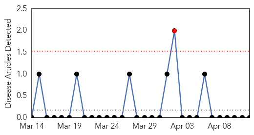
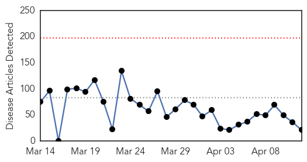
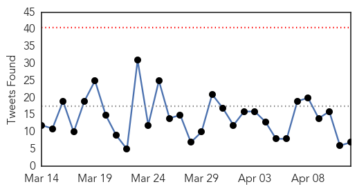
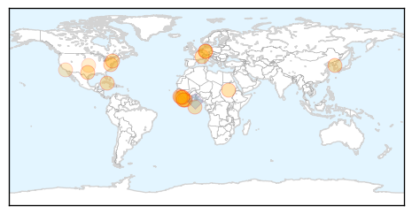

Yellow Fever
30-Day Web Trend
1 alerts, 0 warnings

30-Day Twitter Trend
0 alerts, 0 warnings

Article Locations

Article Confidences

Top Articles:
-
No articles found for Apr 12, 2015
Top Tweets:
-
No tweets found for Apr 12, 2015
Ebola
30-Day Web Trend
0 alerts, 0 warnings

30-Day Twitter Trend
0 alerts, 0 warnings

Article Locations
Article Confidences

Top Articles:
- 1.000
- TEXAS HEALTH WORKER CONTRACTS EBOLA FROM LIBERIAN IMMIGRANT WHO DIED IN HOSPITAL
- 1.000
- Ten lessons from the Ebola epidemic
- 1.000
- Ending Ebola: The 2014 Ebola Outbreak
- 0.998
- DOCTOR IN NYC TESTS POSITIVE FOR EBOLA
- 0.998
- For Ebola survivors it’s not over yet, they still have to face other health scare issues
- 0.998
- ‘Progress’ in Ebola fight, but risks remain
- 0.995
- End of Ebola near – Mahama
- 0.995
- End of Ebola near
- 0.988
- Seoul completes 3-month Ebola response team mission
- 0.977
- The World On Arirang
- 0.973
- New study points to potential Ebola drug target
- 0.970
- Houston scientist hatches plan to prevent next Ebola
- 0.965
- Ghana to honor volunteers serving in Ebola-hit countries
- 0.963
- $1.4 Billion For Unused Treatment Centers
- 0.923
- ‘Broken Down’: Ebola Health Workers Demand Risk Benefit
- 0.882
- Gulf Breeze father helped fight the spread of Ebola
- 0.873
- How Guinea’s Journalists Are Fighting To Win the War Against Ebola
- 0.744
- For Ebola Patients in Liberia, a Way to See the Faces of Those Helping · Global Voices
- 0.663
- Artist Outfits Ebola PPE Suits With Photographs
- 0.566
- National Public Health Week focused on climate change this year
- 0.509
- Ebola survivor plans to return to Liberia
Top Tweets:
- 0.862
- Asheville medical officer helps battle Ebola outbreak - Greenville News http://t.co/pE4SrTDaHz ebola EVD
- 0.685
- Gulf Breeze father helped fight the spread of Ebola - Pensacola News Journal http://t.co/ddBz9AX4ZT ebola EVD
- 0.685
- Gulf Breeze father helped fight the spread of Ebola - Pensacola News Journal http://t.co/E3BgrpEgOI ebola EVD
- 0.654
- There were 32 confirmed Ebola cases in Guinea this week compared with 57 the previous week. EbolaResponse is working.
- 0.629
- Ebola Survivors Could Face Future Health Complications - Big Think (blog) http://t.co/1tHI48IGws ebola EVD
- 0.585
- Houston scientist hatches plan to prevent next Ebola - Washington Times http://t.co/4VQuL4GAjK ebola EVD
- 0.514
- Empty Ebola Clinics in Liberia Are Seen as Misstep in US Relief Effort - New York Times http://t.co/3qiJhD4qnM ebola EVD